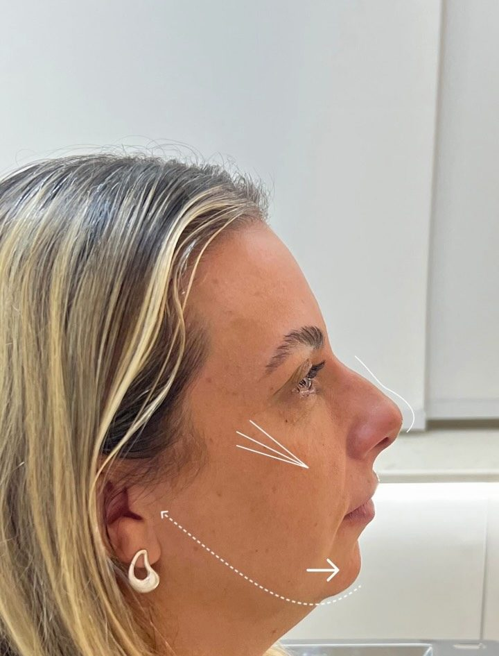
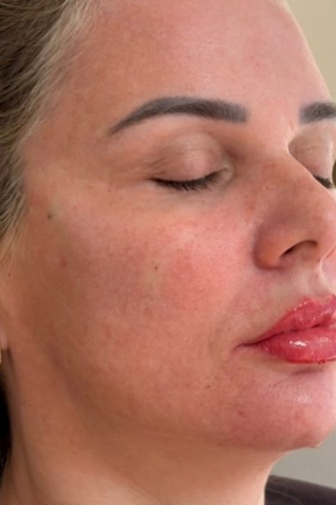
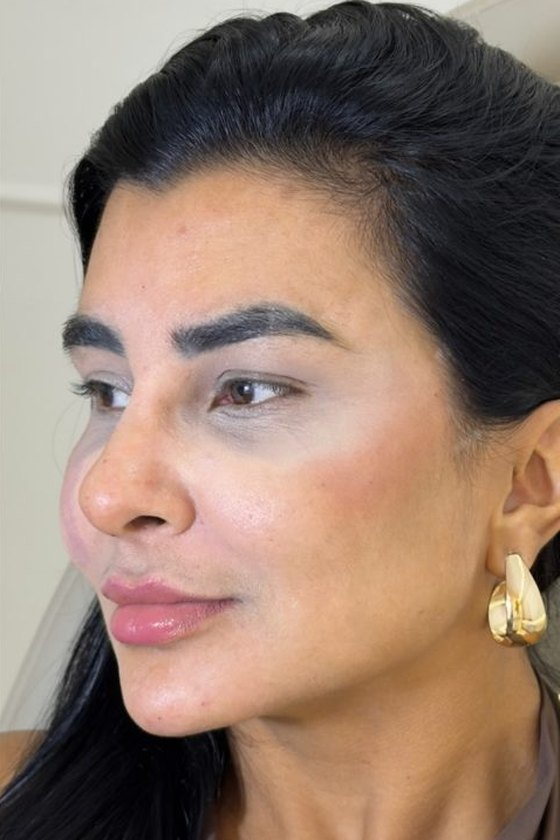
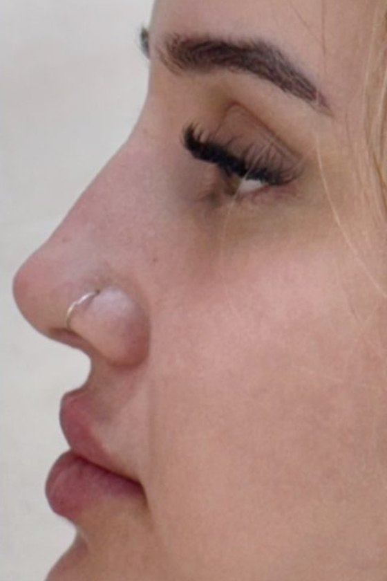
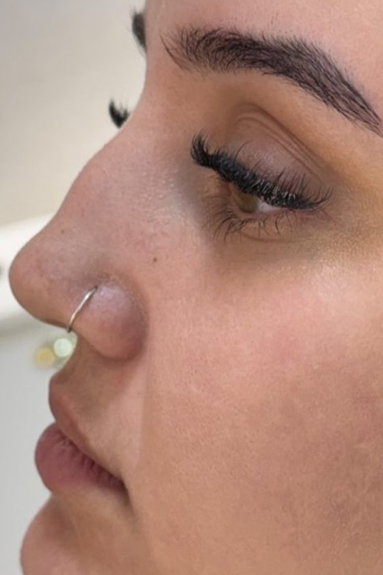
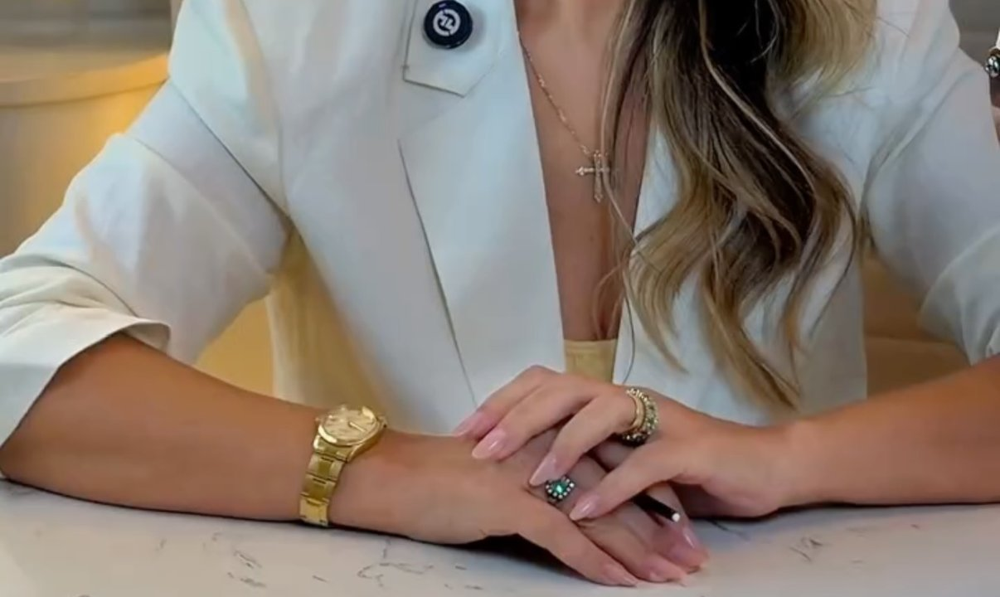
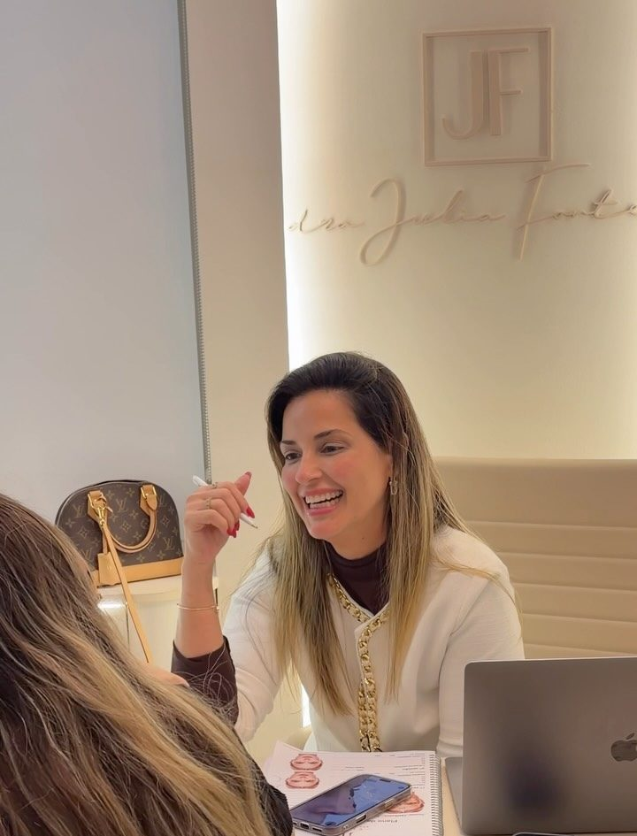
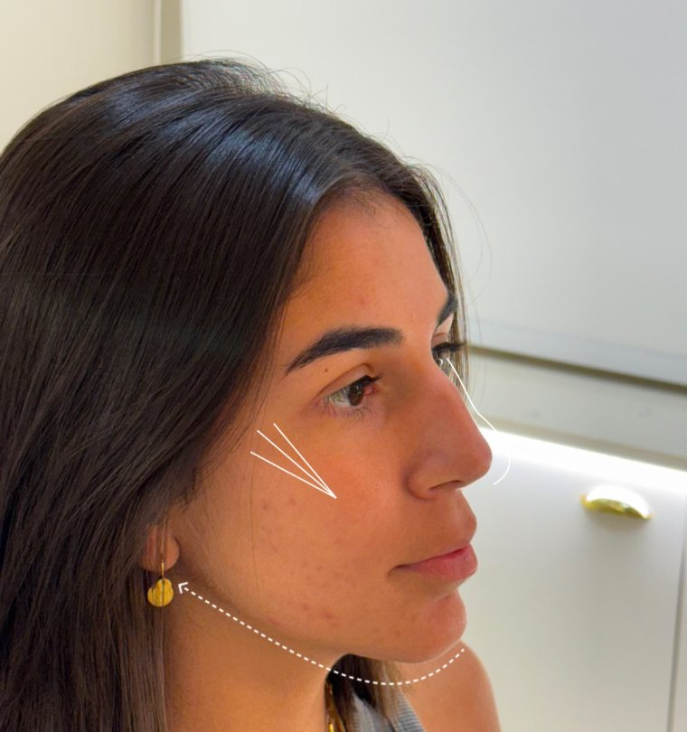
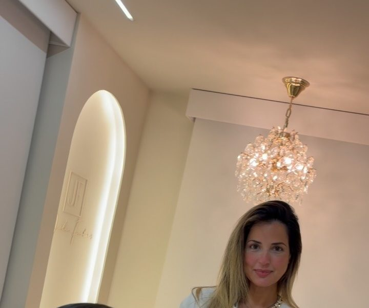

Harmonização facial em Niterói
Cada rosto, uma estratégia.
Sou a Dra. Julia Fontes. Planejo Perfiloplastia®, sustentação e Full Face a partir dos traços de cada paciente, para valorizar a beleza que já existe, sem excessos.
Tratamentos
Tudo começapelo perfil.
Nariz, lábios, queixo e mandíbula em proporção. A Dra. Julia avalia o rosto inteiro antes de indicar qualquer procedimento.
-
01Perfiloplastia®
Equilibra nariz, lábios e queixo vistos de lado.

-
02Sustentação facial
Efeito lifting imediato, sem cirurgia.

- 03Rosto pós-emagrecimento Devolve volume e firmeza depois de perder peso.
-
04Full Face
O rosto inteiro planejado de uma vez.

- 05Toxina botulínica Suaviza as linhas de expressão com naturalidade.
Resultados de pacientes
Antes e depois,sem excessos.
Arraste a linha sobre a foto para comparar. Cada caso partiu de uma avaliação do rosto inteiro, não de um procedimento isolado.
Resultados variam de pessoa para pessoa.


AntesDepois← AntesDepois →

Filosofia
O objetivo não é mudar os traços, mas valorizar a beleza que já existe. Sua beleza merece estratégia, não excessos.
Dra. Julia Fontes
Depoimentos
Nas palavrasdas pacientes.
Mensagens que as pacientes mandaram para a Dra. Julia, guardadas nos destaques do Instagram dela.

Eu sigo aqui apaixonada na minha transformação. Brigada por trazer tanta autoestima e me fazer amar o meu perfil.
Paciente de Perfiloplastia®, comentário no Instagram Seu carinho e cuidado até no pós faz toda diferença.
Paciente, mensagem no WhatsApp Acordei mais bonita hoje.
Paciente, story no Instagram
Como funciona
Três etapas,sem pressa.
Do primeiro encontro ao procedimento, quem acompanha você é a própria Dra. Julia.
-
01 A conversa e a avaliação
Você conta o que incomoda e a Dra. Julia analisa o rosto de frente e de perfil.
-

O plano do seu rosto
Ela monta a estratégia por etapas e explica cada procedimento antes de começar.
-

O procedimento
Feito pela própria Dra. Julia, no consultório, seguindo o plano combinado com você.
Sobre
Dra. JuliaFontes.
“Antes de cuidar de rostos, cuidei de muitos pacientes em momentos difíceis. A humanização sempre foi meu norte.”
Enfermeira e cirurgiã-dentista, referência em Perfiloplastia® e apaixonada pela beleza real e consciente.
A missão dela é cuidar de pessoas com leveza, verdade e propósito. Já foi convidada para palestrar sobre carreira, fé e mentalidade feminina.
- Formação
- Enfermagem e Odontologia
- Registro
- CRO/RJ 54851
- Consultório
- São Francisco, Niterói
Dúvidas
Antes daprimeira consulta.
O que as pacientes mais perguntam antes da primeira avaliação.
Vou ficar com o rosto artificial?
Não é esse o objetivo. O plano valoriza os traços que você já tem, respeitando a naturalidade do seu rosto.
Precisa de pós-operatório?
Os procedimentos são simples e não pedem pós-operatório. Na avaliação, a Dra. Julia explica os cuidados do seu caso.
Emagreci e o rosto ficou flácido. Tem tratamento?
Tem. A sustentação facial devolve firmeza e volume a quem emagreceu, sem cirurgia.
Quanto custa?
Depende do plano de cada rosto. O valor é passado na avaliação, depois que a doutora entende o que você quer.
Agendamento
Agende suaavaliação.
Preencha ao lado e a mensagem vai pronta para o WhatsApp da JF Clinic. A primeira conversa é para entender o seu rosto e o que você quer.
- Onde
- JF Clinic · São Francisco, Niterói
- Falar com a clínica
- @drajuliafontes